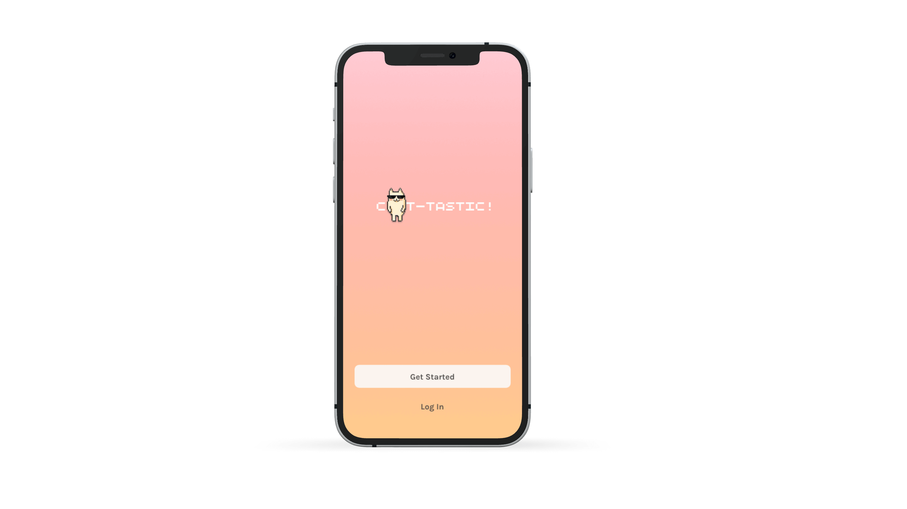
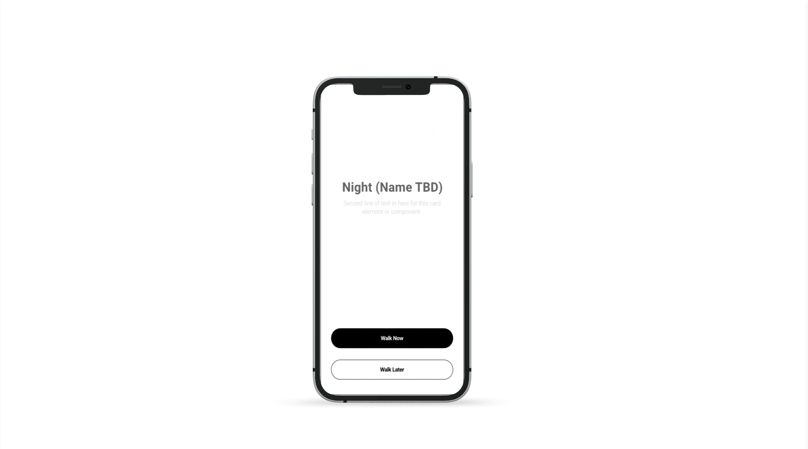

work
cat-tastic
sign-up process
8-2-2022

Individual tasks worked:
user research
wireframing high
fidelity
prototype
Cat-tastic is a fictional app created for people who love their
feline friends. A team of 5, including myself, were tasked to
designing a signup process that, according to users, should be
fast, efficient and secure.
night safety
app
11-20-2022

Individual tasks worked:
user research
wireframing high
fidelity
prototype
Night safety app is geared toward young women, particularly in
college. The app is designed to help users walk to their
destinations while feeling more safe and secure. Whether walking
to the library or the bar, NSA is designed to prevent and reduce
night time harassment and assault crimes against women.